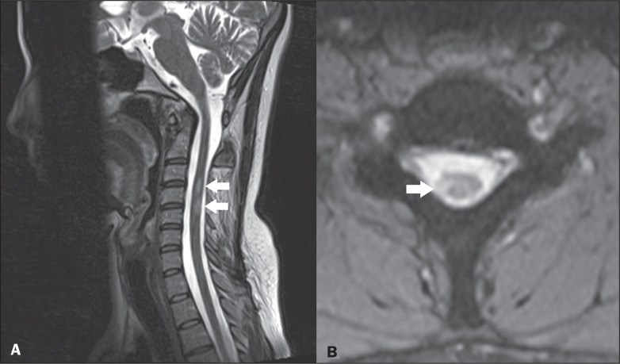

As três de prova + Uhthoff
Ao final: top 3 de prova · prurido neurológico · medula sem ser o padrão grave · cerebelo e autonômico · Uhthoff.
Top 3 de prova
As três manifestações mais comuns / importantes para prova: (1) neurite óptica; (2) síndrome do 1º neurônio motor; (3) sintomas sensitivos. Pode fazer síndrome do 1º NMS (hemiparesia espástica, como no caso). Paciente perdeu a visão → questão “caindo” de esclerose múltipla.
Sensitivo inclui prurido
Pode haver sintomas sensitivos. Entre eles, não pensar só em tato, dor, temperatura e pressão: coceira / prurido também pode ser manifestação sensitiva de lesão neurológica. O estímulo de coceira pode ser conduzido pelo trato espinotalâmico (mesmo eixo da dor e temperatura). Paciente que “coça, coça, coça” não precisa ter alergia / histamina — pode ser alteração sensitiva neurológica.
Medular sem ser o padrão grave
Pode haver sinais medulares. Medula pode, em tese, deixar o paciente paraplégico ou tetraplégico — mas não é o padrão da EM. Esclerose múltipla não costuma fazer muitas lesões graves na medula espinhal.
Cerebelo e autonômico
Pode haver manifestações cerebelares (coordenação, equilíbrio) — fixação leve: o “serebebado”. Pode haver incontinência urinária por acometimento da via autonômica. (Há “muito mais” porque o nome é múltipla — o foco de prova são as mais comuns.)
Uhthoff
Sintoma de Uhthoff: piora clínica com aumento da temperatura corporal, sem piorar a inflamação. Só o ato de aumentar a temperatura piora o quadro. Exemplos: clima frio → quente; febre de gripe; esforço/exercício (ginástica de Jaqueline).
| Manifestação | Topografia / via | Observação de prova |
|---|---|---|
| Neurite óptica | II par (SNC) | Mais clássica + “mulher jovem + visão” |
| 1º NMS | SNC (córtex→medula) | Hemiparesia espástica |
| Sensitivo | Inclui espinotalâmico | Coceira pode ser neurológica |
| Medular | Medula | Pode paraplegia/tetraplegia — não é padrão grave |
| Cerebelar | Cerebelo | Coordenação/equilíbrio (“serebebado”) |
| Autonômico | Via autonômica | Incontinência urinária |
| Uhthoff | Termorregulação × condução | Piora com calor sem ↑inflamação |
Resumo operacional
Top 3 + Uhthoff; medula grave não é o estereótipo.

Pereira RG, Ribeiro BNF, Pereira TRG, Bahia PRV, Marchiori E. Radiol Bras 2021 · CC BY 4.0 · PMC8630953
Medula leve, não grave
Lesões curtas e periféricas na medula: a EM pode acometer a medula, mas raramente faz o padrão paraplégico/tetraplégico — o que cai é o quadro leve, como aqui.
Como a doença se comporta no tempo.
Quiz
Q1. As três manifestações mais cobradas na EM de acesso direto são:
Gabarito: B. Neurite óptica + síndrome do 1º NMS + sintomas sensitivos são o top 3 de prova.
(A) paraplegia grave não é o estereótipo da EM. (C)(D) são possíveis, mas não o foco de prova.
Por que se cai na A: lembrar do pior cenário e achar que é o mais cobrado.
Q2. Uhthoff é:
Gabarito: B. Uhthoff é pseudoexacerbação térmica: calor piora o quadro sem nova inflamação.
(A) não é infecção da mielina. (C) não é surto. (D) não é critério de McDonald.
Por que se cai na C: confundir febre/calor com novo surto inflamatório automático.
Q3. Prurido intenso sem alergia clara, em contexto de EM, pode ser:
Gabarito: B. Coceira pode ser manifestação sensitiva neurológica, conduzida pelo espinotalâmico.
(A) nem sempre é histamina. (C) não é prova de SNP. (D) não exclui EM.